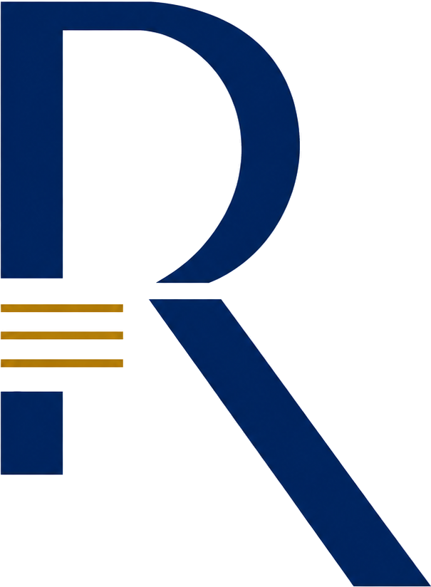

Estruturação de Empreendimentos
Produto, zoneamento, viabilidade, modelagem financeira, funding, cronograma e estratégia de implantação.
Estruturação, gestão e inteligência para transformar oportunidades imobiliárias em decisões mais seguras, operações mais eficientes e empreendimentos executáveis.
Da análise do terreno ao acompanhamento da operação. Uma única visão para decidir, executar e corrigir rota.
A REDE conecta estratégia, produto, viabilidade, engenharia, orçamento, compras, financeiro, jurídico e comercial em uma leitura única do empreendimento.
O objetivo não é produzir mais relatórios. É reduzir decisões ruins, antecipar desvios e aumentar a qualidade da execução.
A REDE entra onde o empreendimento precisa de estrutura, método e direção.
Produto, zoneamento, viabilidade, modelagem financeira, funding, cronograma e estratégia de implantação.
Engenharia, orçamento, suprimentos, contratos, medições, caixa, custos, riscos e performance operacional.
Análise de oportunidades, estruturação de capital, acompanhamento de ativos e visão executiva para investidores.
Plataforma proprietária para viabilidade, risco, orçamento, acompanhamento e inteligência de decisão.
Uma plataforma para transformar dados fragmentados em decisões rastreáveis, comparáveis e executáveis.
Viabilidade em uma planilha. Orçamento em outra. Engenharia em um sistema. Comercial em outro. Financeiro tentando fechar a conta no fim do mês.
A REDE Intelligence nasce para conectar essas decisões em uma única camada de inteligência, com histórico, evidência, responsabilidade e leitura executiva.
Terreno, contexto, produto, restrições e premissas.
Viabilidade, custos, receitas, funding, cronograma e cenários.
Riscos, inconsistências, dependências e pontos cegos.
Planos, aprovações, orçamento, contratos, medições e caixa.
Previsto × realizado, causa-raiz e inteligência acumulada.
Exemplos de frentes em que a REDE pode atuar sem expor dados confidenciais de clientes.
Produto, viabilidade, cronograma, funding e estratégia de implantação.
Orçamento, contratos, medições, caixa, desvios e causa-raiz.
Leitura de risco, retorno, governança e acompanhamento executivo.

A REDE nasce da prática de estruturação e desenvolvimento imobiliário e evolui para uma plataforma que combina experiência de negócio, gestão e tecnologia.
O foco é simples: aumentar a qualidade das decisões e reduzir a distância entre o que foi planejado e o que realmente acontece no empreendimento.
Apresente o caso. A primeira conversa serve para entender o problema e identificar onde existe valor real para capturar.